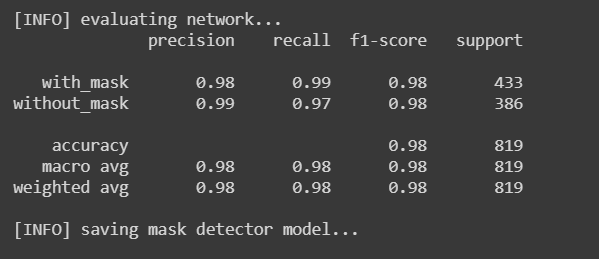
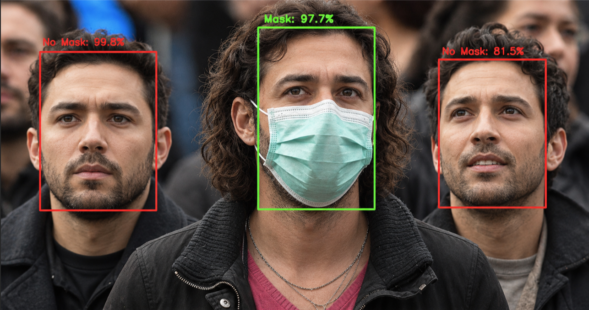

Face Mask Detection System
Real-Time Computer Vision | TensorFlow CNN | Live Webcam Inference
A deployment-oriented computer vision application that classifies detected faces as Mask or No Mask using a TensorFlow CNN model inside a live OpenCV webcam pipeline. The project covers dataset preparation, model training, evaluation, and real-time inference in a structured application built for practical monitoring use.
Project Overview
This project implements an end-to-end face mask classification system for live video input. OpenCV captures webcam frames and detects faces in each frame. A TensorFlow-based CNN then performs binary classification on each detected face region, outputting either Mask or No Mask with an associated confidence score.
The application is structured for real-world use rather than notebook-only experimentation: separate modules for capture, face detection, model inference, and visualization, with the trained CNN loaded for continuous real-time prediction on live video streams.
The Problem
Manual mask monitoring does not scale and is difficult to enforce consistently across entrances, workplaces, and public spaces. Organizations need an automated system that can flag Mask or No Mask status continuously without relying on human observation at every point of entry.
The technical challenge extends beyond model accuracy. The system must handle varying lighting, camera angles, and motion while maintaining stable real-time performance on commodity hardware — and be organized as maintainable application software rather than a one-off demo script.
The Solution
I built a deployment-ready pipeline around a TensorFlow CNN trained for binary Mask / No Mask classification. OpenCV handles webcam capture, face detection, and on-screen visualization. For each detected face, the CNN runs inference and the result is displayed with a label and confidence score overlaid on the live feed.
The repository is organized for engineering use with separate concerns for data handling, model loading, inference, and runtime configuration — making the same trained model reusable across development and deployment workflows.
Workflow / Technical Process
- Collect and preprocess labeled Mask / No Mask training images
- Design and train a TensorFlow CNN for binary classification
- Evaluate model performance with precision, recall, and F1-score
- Integrate the trained model into an OpenCV live webcam loop
- Detect faces per frame and classify each region as Mask or No Mask
- Render bounding boxes, labels, and confidence scores in real time
- Structure the application for deployment-oriented packaging
System Pipeline
The runtime pipeline follows a clear flow from camera input to on-screen classification output, with each stage isolated for testing and maintenance.
Capture
Live webcam frames acquired through an OpenCV video stream
Detect
Faces located in each frame using OpenCV face detection
Classify
TensorFlow CNN predicts Mask or No Mask per detected face
Visualize
Labels and confidence scores drawn on the output frame
Display
Real-time feed presented for monitoring and operator review
Tools & Technologies
Key Features
Binary CNN Classification
TensorFlow CNN trained to classify each detected face as Mask or No Mask with a confidence score.
Live Inference
Real-time classification on continuous webcam input with low-latency frame processing for practical monitoring use.
OpenCV Runtime
Webcam capture, face detection, and on-screen annotation handled through OpenCV.
Deployment Structure
Modular application layout with configurable inference settings for use beyond local development.
Results / Impact
The trained CNN achieved 98% overall accuracy on the evaluation set, with strong precision, recall, and F1-scores across both Mask and No Mask classes. The system delivers reliable real-time classification suitable for access control, workplace monitoring, and public health scenarios.
The project demonstrates the full engineering path from labeled data and TensorFlow model training to a runnable OpenCV deployment pipeline on live video — showing how classification models are integrated into practical computer vision applications.
Inference Demo
Live inference output from the OpenCV pipeline — multiple faces detected per frame, each classified as Mask or No Mask with an associated confidence score.

Model Evaluation
Classification performance measured on the held-out evaluation set using standard metrics for both Mask and No Mask classes.

Skills Demonstrated
- TensorFlow CNN design, training, and evaluation
- Binary image classification (Mask / No Mask)
- Real-time computer vision pipeline development
- OpenCV webcam capture, face detection, and visualization
- Model integration for live inference
- Deployment-oriented AI application engineering
Engineering Highlights
- End-to-end pipeline from dataset to live webcam deployment
- TensorFlow CNN binary classifier with 98% evaluation accuracy
- Real-time inference tuned for continuous video streams
- Modular application structure for maintainability and extension
- OpenCV-based capture, face detection, and visualization stack
- Practical monitoring workflow, not notebook-only experimentation